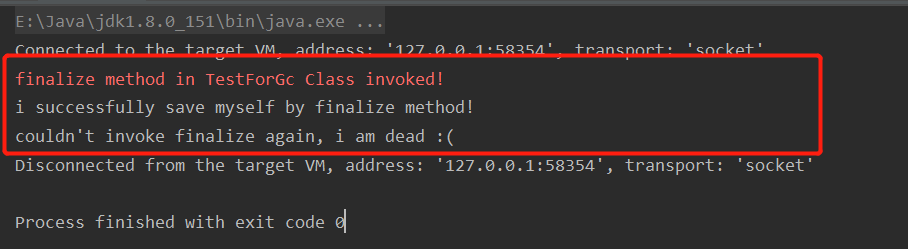
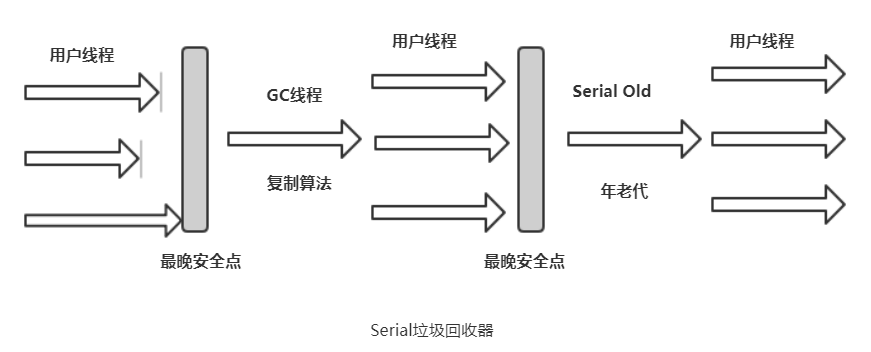
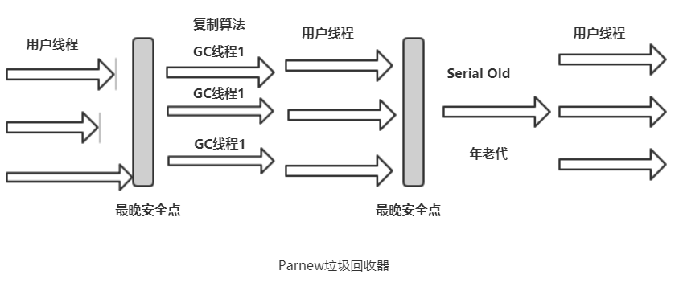
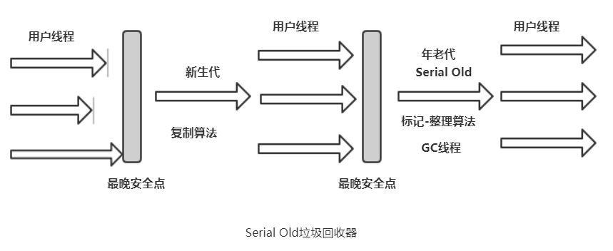
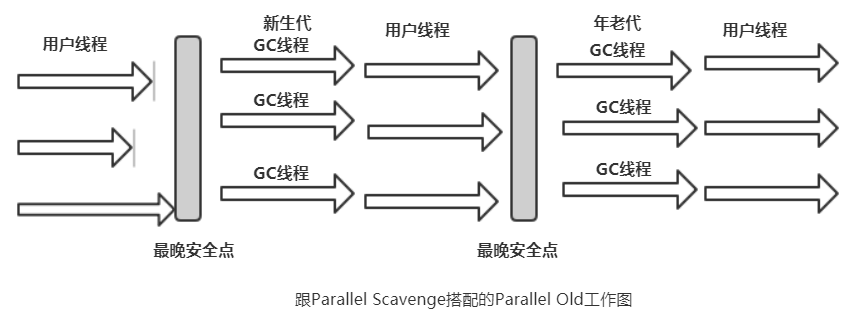
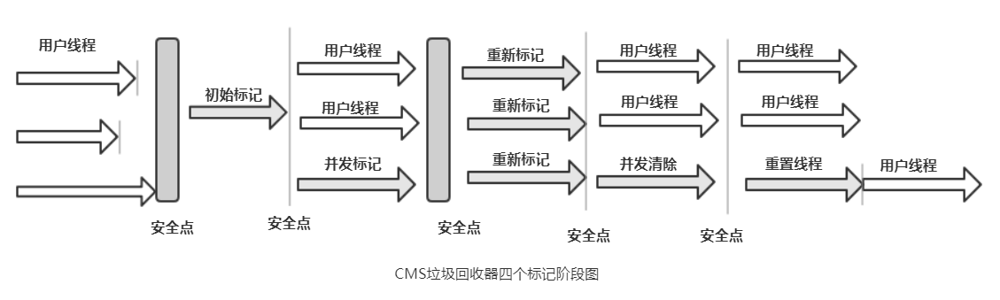
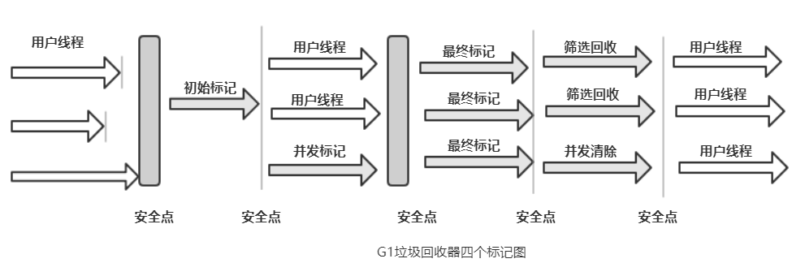
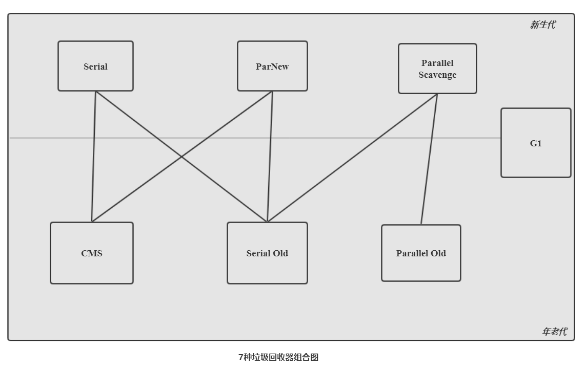

finalize()能做的所有工作，使用try-finally或者其他方式都可以做得更好、更及时，所以笔者建议大家完全可以忘掉Java语言中有这个方法的存在。
——《深入理解JVM》
finalize()方法确实可以实现一次对象的自救，但是其不确定性和昂贵的运行代价都表明这个方法的使用需要十分的慎重。那么finalize()在什么时期起作用又是如何实现对象的自救的呢？首先我们要理解虚拟机在扫描到死亡对象的时候并不是直接回收的，而是进行一次标记并且筛选，筛选的条件就是其对象的finalize方法是否有必要执行。如果当前对象没有重写finalize方法或者已经调用过一次finalize方法，那么则视为没有必要执行，此时便失去自救的机会，放入"即将回收"集合中。
否则的话，则将对象放入一个叫F-Queue的队列中，稍后虚拟机将一个个的执行队列中对象的finalize方法（就是在此处对象可以在finalize方法中将自身关联到引用链，从而暂时逃脱被回收的命运），需要注意的是虚拟机保证执行但不保证执行完finalize方法，原因是如果finalize方法执行时间过长或者陷入死循环，则可能让系统奔溃。全部执行之后，虚拟机将对队列的对象重新标记一次，如果还不在引用链中则GG，否则将其移出"即将回收"集合。下面例子参考《深入理解JVM》实现自救并且验证只能自救一次的过程。
public class TestForGc {
/** 定义一个根节点的静态变量 */
public static TestForGc INSTANCE;
/**
* 重写finalize方法，让其被标记为有必要执行并且加入F-Q
*
* @throws Throwable
*/
@Override
protected void finalize() throws Throwable {
super.finalize();
System.err.println("finalize method in TestForGc Class invoked!");
// 将自身关联到根节点中，实现自救
INSTANCE = this;
}
public static void main(String[] args) throws InterruptedException {
INSTANCE = new TestForGc();
INSTANCE = null;
System.gc();
// 睡眠1S，保证F-Q中的方法执行完毕
TimeUnit.SECONDS.sleep(1);
if (Objects.nonNull(INSTANCE)) {
System.out.println("i successfully save myself by finalize method!");
} else {
System.out.println("i am dead :(");
}
/*
* 下面验证finalize方法只能调用一次
* 几乎完全一样的代码，却是不同的结局
*/
INSTANCE = null;
System.gc();
// 睡眠1S
TimeUnit.SECONDS.sleep(1);
if (Objects.nonNull(INSTANCE)) {
System.out.println("i successfully save myself by finalize method again!");
} else {
System.out.println("couldn't invoke finalize again, i am dead :(");
}
}
}
执行结果：
如果说回收算法是接口，那么垃圾回收器就是这些接口的实现类，共有7种回收器，接下来一一罗列。
Serial是一种单线程垃圾回收器，在工作的时候的时候会暂停所有的用户线程，也就是"stop-the-world"，虽然单线程代表了用户线程的停顿，但是也意味着其不用进行线程的交互从而有更高的收集 效率。Serial采用复制算法，是Client端新生代的默认垃圾回收器。其工作图类似于：

ParNew是Serial回收器的多线程版本，是Server端新生代的默认回收器，除了并行多线程之外，其他包括实现都是一模一样，当然也是采用复制算法。还有一点重要的是，新生代的收集器除了Serial之外，只有ParNew能跟年老代的CMS合作，其在低CPU的情况下效率比Serial低，但是在多个CPU的情况下要好的多。其工作图：

跟ParNew类似，作用于新生代，并行多线程并且也是采用复制算法。但是其关注的点却不同，其着重的是一种叫做"吞吐量"的东西。所谓的"吞吐量"=运行用户代码的时间 / (运行用户代码的时间 + GC时间)，也就是说其更加注重用户代码运行时间而不是减少GC停顿时间。相对于其他收集器来说，可以更加高效的利用CPU，更加适合作为在后台运算而不大需要交互的任务。Parallel收集器提供了两个比较重要的参数。
-XX:MaxGCPauseMillis：表示收集器将尽可能的在这个参数设定的毫秒数内完成回收工作。但这并不代表其设置的越低越好，缩减回收时间是通过减少吞吐量换来的，如果设置得太低可能导致频繁的GC。
-XX:GCTimeRatio：表示代码运行时间和垃圾回收时间的比率，比如说设置为19，那么则垃圾回收时间占比为 1 / (1+19) = 5%，默认是99。
Serial的年老代版本，同Serial基本相似，不同的是采用的是标记-整理算法实现，作为Client端默认的年老代收集器。如果在Server端的话，那么其主要作用有二：
1、跟新生代的Parallel Scavenge收集器配合。
2、做一个有价值的"备胎"：当CMS垃圾回收器因为预留空间问题放不下对象而发生Concurrent Mode Fail时，作为其备选方案执行垃圾回收。

Parallel Scavenge的年老代版本，多线程并行，同样注重吞吐量，使用标记-整理算法。这个收集器可以跟新生代的Parallel Svavenge一起搭配使用，在注重吞吐量和CPU资源敏感的场合中是一对很好的组合。

来了，它来了！CMS垃圾回收器被当做是具有划时代意义的、真正实现并发的垃圾回收器，总而言之=》
,--^----------,--------,-----,-------^--,
| ||||||||| `--------' | O
`+---------------------------^----------|
`\_,-------, _______________________强__|
/ XXXXXX /`| /
/ XXXXXX / `\ /
/ XXXXXX /\______(
/ XXXXXX /
/ XXXXXX /
(________(
`------'
CMS是一款并发的垃圾回收器，但并不代表全程都不需要停顿，只是大部分时间是跟用户线程一起执行的。其整个GC过程中总共有4个阶段。
1、初始标记：简单的标记所有的根节点，需要暂停所有的用户线程，即"stop-the-world"，耗时较短。关于GCRooots的过程可以看下另一篇文章——垃圾回收（一）。
2、并发标记：跟用户线程一起工作，寻找堆中的死亡对象，整个过程耗时最长。
3、重新标记：再次扫描，主要对象是并发标记过程中又新增的对象，也就是验漏。多线程，需要STW，时间相对并发标记来说短。
4、并发清除：GC线程跟用户线程一起执行，清除标记的死亡对象，"浮动垃圾"在此阶段产生。

然而，优秀如CMS也会有不足之处，总共四个阶段的标记及清除算法的实现必定为其带来一些使用的麻烦。
缺点：
1、占用一定CPU资源：其有两个阶段需要并发跟用户线程一起执行，也就是说要跟用户线程抢占CPU的时间片，会占用一定的CPU资源，如果CPU资源不太优质的情况下，可能会造成不小的影响。
2、空间利用率不能达到最大：由于并发清除时用户线程也在运行，那么在GC结束前必定会产生一些额外的垃圾，那么就必须给这些垃圾预留一定的空间，否则会导致内存不足从而报"Concurrent Mode Failure"，此时虚拟机便启用后备方案——使用Serial Old来进行垃圾回收，进而浪费更多的时间。
3、内存碎片导致提前FullGC：CMS采用的是标记-清除算法，也就是说会产生内存碎片，那么可能出现大对象放不下的情况，进而不得不提前进行一次FullGC。为了解决这个问题，虚拟机提供了两个参数-XX:+UseCMSCompactAtFullCollection和-XX:CMSFullGCsBeforeCompaction，分别表示CMS顶不住要进行FullGC的时候进行内存的整理（整理的过程中无法并发，停顿时间不得不变长） 和进行多少次不压缩的FullGC之后来一次整理的GC（默认0次，表示每次都进行内存整理）。
G1是一个新秀垃圾回收器，被赋予了很大的使命——取代CMS。G1作为新时代的垃圾回收器，相对于其他垃圾回收器来说有许多优势。
1、并行和并发：G1可以利用现在的硬件优势，缩短GC时stop-the-world的停顿时间，并且GC的时候同时也能让用户线程执行。
2、分代收集：跟其他垃圾回收器不同，G1没有物理上的年老代和新生代，其将内存分成了多个独立的Region，每个Region都可能表示属于新生代还是年老代，所以不需要一堆Region凑放在一起然后将这块区域称作新生代，它们之间并不需要连续，所以只有概念上的分代，也是这种分代方式使得G1可以独立管理这个堆空间，不需要跟其他回收器合作。
3、空间整合：G1的算法从Region层面看属于复制算法（从一个Region复制到另一个），但是从整体看又是标记-整理法。然而不管是哪种，都表示G1不会产生内存碎片，不会因为空间不连续放不下大对象而出现FullGC的情况。
G1回收器将内存空间分成若干个Region，并且这些Region之前相互独立。但是我们都知道这并不能真正的独立，因为一个Region中的对象不一定只会被当前Region的其他对象引用，而可能被堆中的其他对象引用，那G1是如何实现避免全堆扫描的呢？这个问题在分代的其他回收器中也有，但是在这里突显得更加明显而已。再G1中，对象本身都会有一个Remembered Set，这个Set存放着当前对象被其他区域对象引用的信息，这样子，在扫描引用的时候加上这个Set就可以避免全堆扫描了。
具体实现大致为：虚拟机在发现程序正在进行对Reference类型的写操作时，会暂时中断写操作，然后检查Reference引用的对象是否处于不同的区域（如果是分代，则只对年老代的对象进行检查，检查是否引用的对象在新生代），如果是的话则将引用信息记录在被引用的Remembered Set中，这样在GC的时候加上Remembered Set的扫描就可以避免全堆扫描了。
跟CMS类型，G1也有四个阶段（不算Remembered Set的扫描），虽然相似但是还是有些区别的。
1、初始标记：标记可达的根节点，STW，单线程，时间短。
2、并发标记：跟用户线程同时执行，并发执行时对象可能会产生引用变化，其会将这些变化记录在Remembered Set Logs中，待下个阶段整合。
3、最终标记：验漏，将并发标记阶段的引用变化记录Remembered Set Logs整合到Remembered Set中。
4、筛选回收：对各个Region中的回收价值进行排序，然后执行回收计划。暂停用户线程，并行执行。

本文首先介绍了“对象自救”的方法——finalize，并且用一个小例子演示了对象如何实现自救。接着介绍了7种不同的垃圾回收器，新生代中有单线程的Serial可以作为Client端新生代的默认回收器，有多线程版本的Serial——ParNew，还有着重点不同（吞吐量）的Parallel Scavenge；年老代方面有单线程的Serial Old、跨时代意义的并发回收器——CMS，虽然优秀但不可避免的有三个缺点、还有吞吐量年老代版本——Parallel Old收集器，最后还简单介绍了G1收集器的几个过程还有独立的Region间是如何实现避免堆扫描的。
整体下来整篇行文还有些粗糙，日后会慢慢的圆润，如果有关于这方面好的文章可以在下面评论区分享学习一下，下方为各个垃圾回收器的搭配图。

It helps me a lot if you could share your opinion with us.